Youth Sports · Miami Hoops · Look only
A parent who forgets their password currently has no way back in — there is no control on the sign-in form and no page behind one. This adds both, in the auth chrome that already exists. Nothing is merged and nothing is on navy.
| Claim | Verified against |
|---|---|
| Sign-in form has no Forgot password | src/app/auth/AuthForm.tsx — email, password, submit, Sign up link. Nothing else. |
No /auth/forgot-password route | src/app/auth/ holds only login, signup, callback, set-password. |
| Recovery already works once the email lands | callback.ts:62 keys off type=recovery; callback.test.ts asserts recovery verifies straight to /auth/set-password. |
| The redirect helper already exists | siteUrl.ts:11 — authCallbackUrl("recovery") returns the navy origin + ?type=recovery, and is covered by a test. |
| Nothing sends the mail yet | resetPasswordForEmail has zero call sites in src/. That one call is the whole build. |
So this is a small piece of work: the back half of the flow is built and tested. What is missing is the front door.
Placed on the password label row, right-aligned — the pattern on Squarespace, Dropbox, GitHub and Stripe, and the one place a parent looks when the password is the thing that failed. It uses the same brand link treatment as the existing Sign up link, so nothing new enters the design.
It costs no height. Measured in the browser at 1440px: the card is 416 × 282px before and 416 × 282px after, and the Sign in button stays at y=406. The label and the link sit on a shared baseline (0px apart). Nothing below it moves.
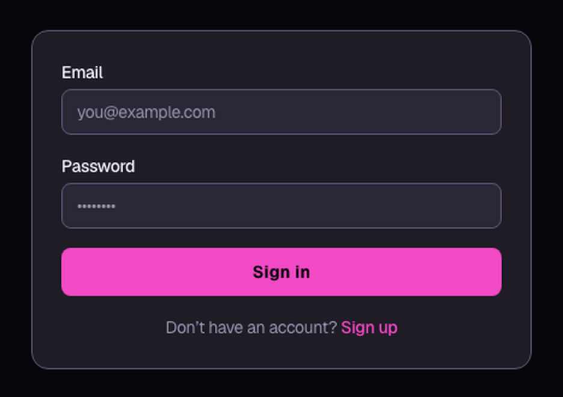
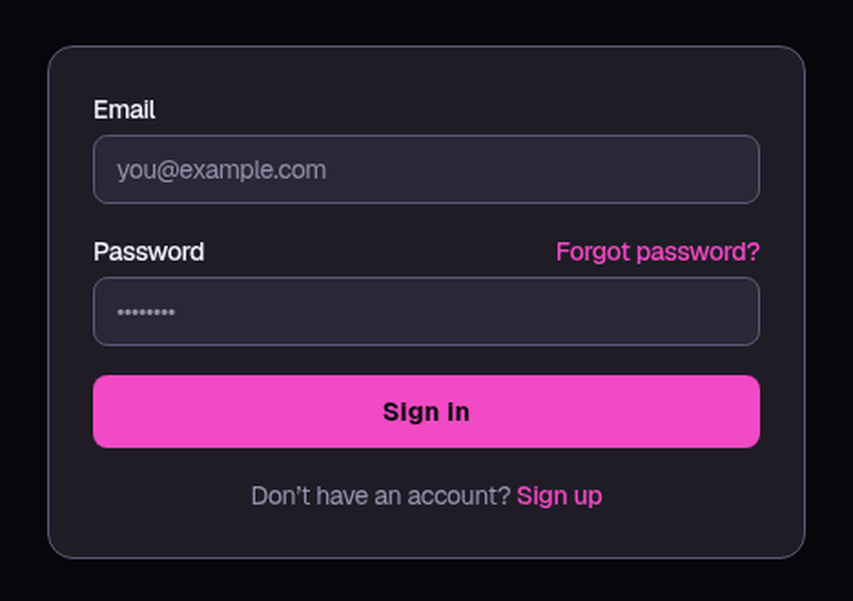
Considered and not chosen: putting it under the Sign in button next to “Don’t have an account?”. It reads as an afterthought there, and it competes with Sign up for the same line.
Same chrome as Welcome back — heading, one line of help, the same Card, the same input and full-width brand button. Title, one line, one field, one action, one way back. No hero, no illustration, no second CTA.
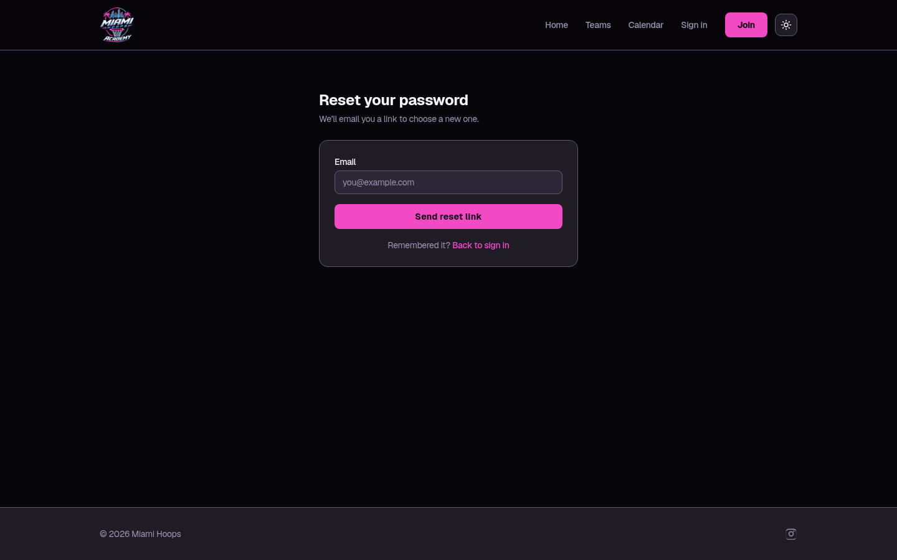
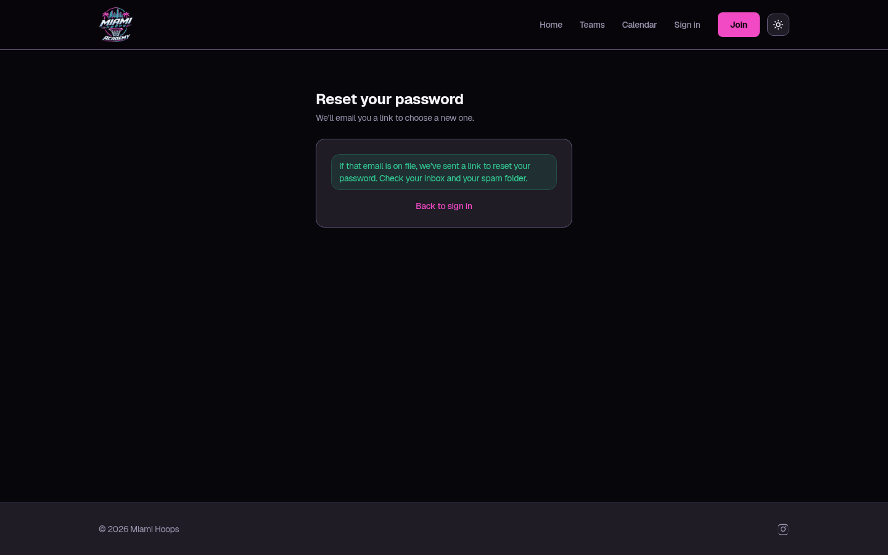
The success line is deliberately neutral: “If that email is on file, we’ve sent a link to reset your password.” It never confirms whether an address has an account, so the form cannot be used to find out which parents are registered. Dropbox words it the same way, for the same reason. It reuses the notice styling AuthForm already renders for state.notice, so it is not a new component.
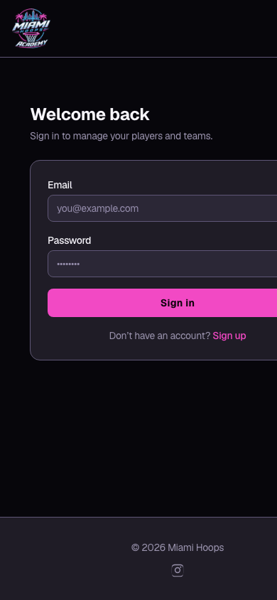
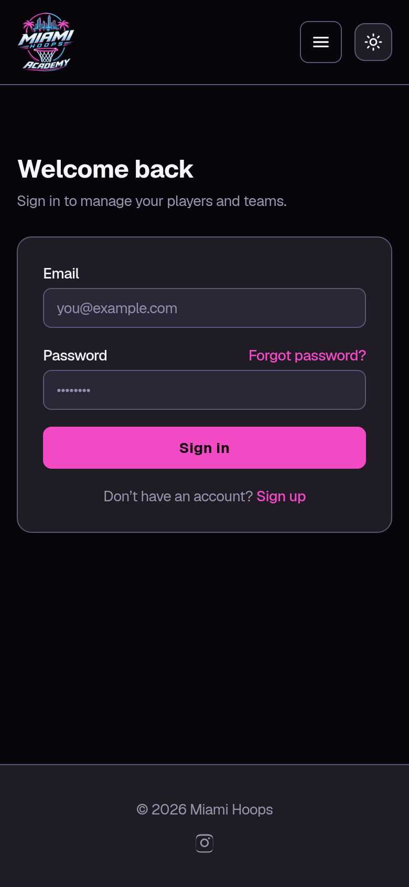
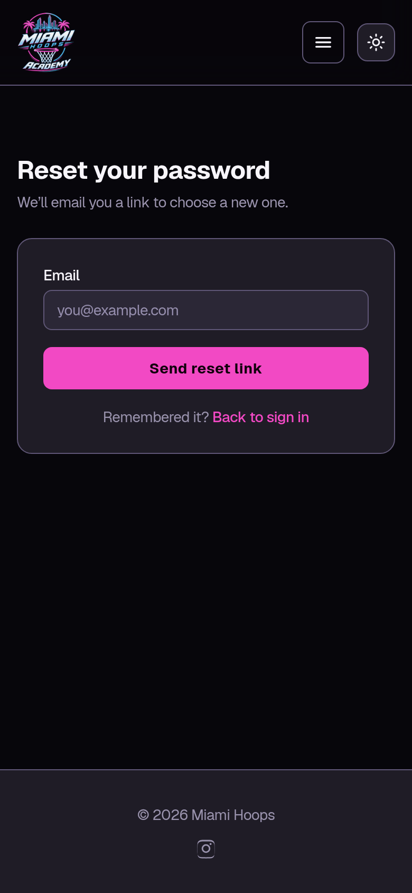
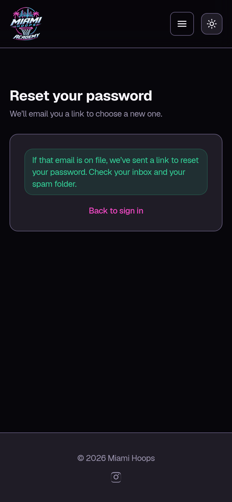
The label row is a flex row, so on a narrow screen the link stays on the label’s line rather than wrapping under it. Checked at 390px.
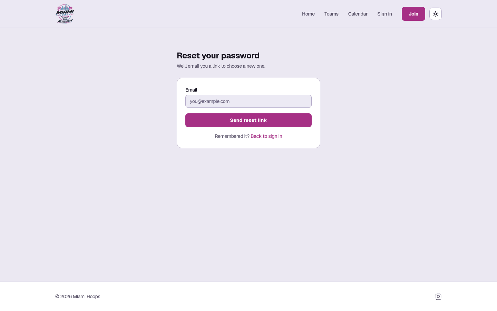
Who actually sends the mail. This flow would go out on Supabase Auth’s own recovery email — resetPasswordForEmail — not the app’s email module, which is built but wired to nothing. That is the right call for a password reset, and it is the only send permitted here.
Worth confirming the project’s Auth SMTP settings before the build, though: Supabase’s built-in sender is rate-limited and intended for development. If it has not been pointed at a real sender, resets would go out slowly or not at all — and the neutral success message means a parent would never know. This is a question to answer, not something observed broken.
The After screens are the real application, not a drawing — the proposed change was applied locally, rendered by the dev server, photographed at 1440px and 390px, and then reverted. Nothing was committed, no branch was pushed, and resetPasswordForEmail was never called: the mock form has no action wired to it at all and the success state is driven by a query parameter. No email reached anybody.
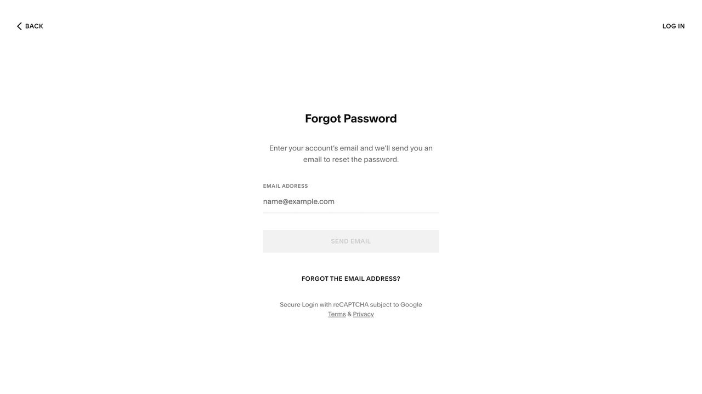
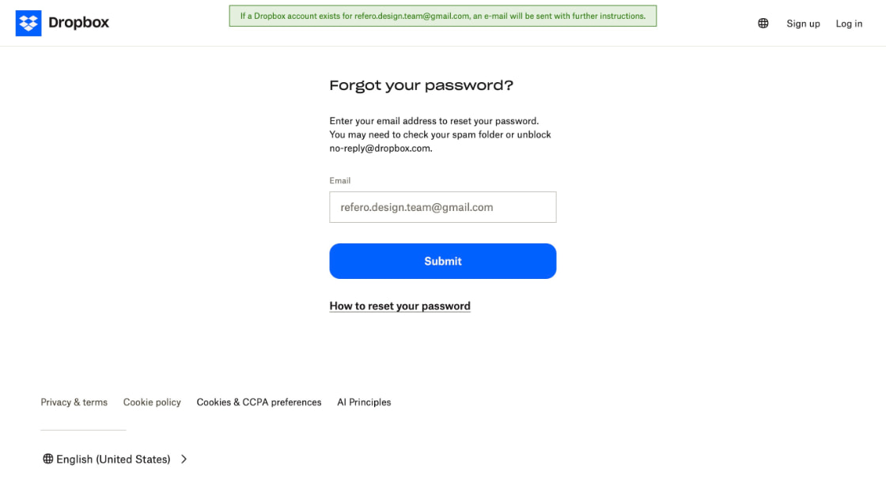
Look-yes or look-no via Prometheus. On a yes this is one new route, one link in AuthForm, and one resetPasswordForEmail call pointed at the authCallbackUrl("recovery") helper that already exists. No migration, no new dependency, no change to Sign up. Nothing merges or deploys until Paul says.